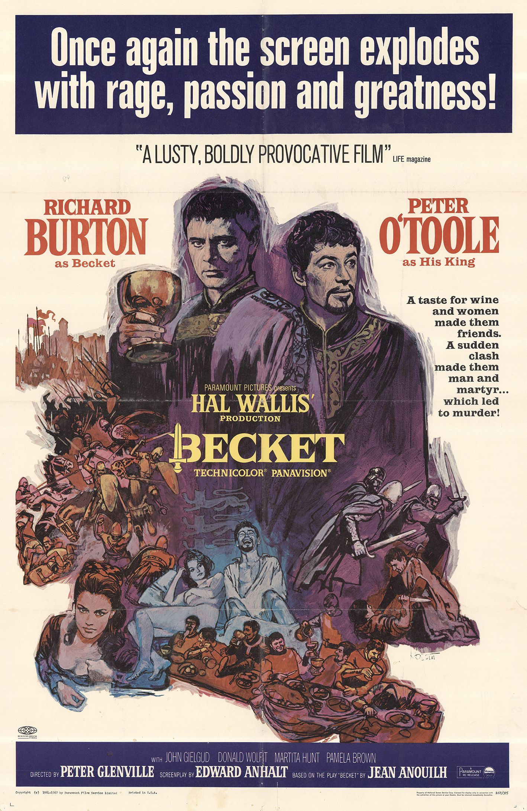

Becket
37th Academy Awards
(Oscars 1965)
12 Nominations, 1 Award
| Nominations | ||
|---|---|---|
| Category | Nominees | Result |
| Best Picture | Hal B. Wallis | Nominated |
| Actor | Peter O'Toole | Nominated |
| Actor | Richard Burton | Nominated |
| Actor in a Supporting Role | John Gielgud | Nominated |
| Directing | Peter Glenville | Nominated |
| Writing (Screenplay--based on material from another medium) | Edward Anhalt | Won |
| Cinematography (Color) | Geoffrey Unsworth | Nominated |
| Film Editing | Anne Coates | Nominated |
| Art Direction (Color) | John Bryan, Maurice Carter, Patrick McLoughlin, and Robert Cartwright | Nominated |
| Costume Design (Color) | Margaret Furse | Nominated |
| Sound | John Cox | Nominated |
| Music (Music Score--substantially original) | Laurence Rosenthal | Nominated |